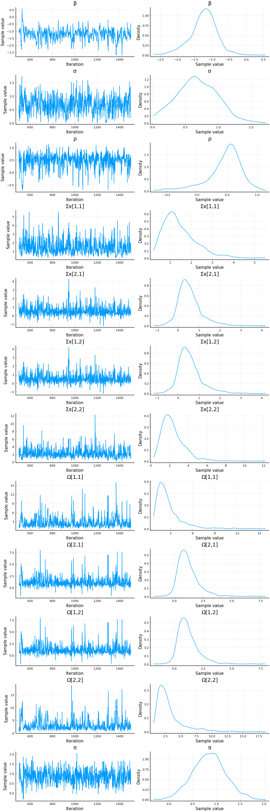

This work is licensed under a Creative Commons Attribution-ShareAlike 4.0 International License
using Plots, Distributions
Plots.pyplot()
Plots.PyPlotBackend()
Introduction¶
Traditional bayesian methods require a fully specified statistical model, so that a likelihood can be calculated. In particular, this requires specifying the distribution of error terms. In IO, and economics more broadly, many applied models avoid placing distributional assumptions on error terms, and instead use GMM for estimation.
There are two ways to convert a GMM model into something suitable for Bayesian methods. One is to just add distributional assumptions to the error terms. (Jiang, Manchanda, and Rossi 2009) applies this approach to a random coefficients demand model.
A second approach is the Quasi-Bayesian approach of (Chernozhukov and Hong 2003). In this approach, you simply use the GMM objective function in place of the likelihood. We will look at it in some detail.
Random Coefficients IV Logit¶
As a working example, we’ll use a random coefficients multinomial logit with endogeneity. To keep things simple for illustrustration, we’ll assume that there’s a single endogenous variable, $x \in \mathbb{R}^J$, and market shares are given by
The moment condition will be
Fully specified likelihood¶
One way to estimate the model is to fully specify a parametric likleihood. In the simulated data, we know the correct likelihood, so the results we get will be about as good as we can possibly hope to get. Compared to GMM, the full likelihood approach here assumes that (conditional on the instruments, $z$), the market demand shocks are normally distributed,
The endogenous variable, $x$, has a normal first stage,
and to keep the number of parameters small, we’ll impose $\Pi=\pi I_J$ and $\Rho=\rho I_J$.
Finally, we’ll assume the observed market shares $s_j$ come from $M$ draws from a Multinomial distribtion
where $s^*()$ is the share function implied by the random coefficients model. This approach removes the need to solve for $\xi$ as a function of $s$ and the other parameters. However, it has the downsides of needing to know $M$, and needing to sample $\xi$ along with the parameters to generate the posterior.
We implement the above model in Turing.jl. This gives a convenient way to both simulate the model and compute the posterior. However, it has the downside of putting an extra layer of abstraction between us and the core computations. This ends up costing us a bit of computation time, and arguably making the posterior calculation harder to debug and extend.
using Turing, FastGaussQuadrature, LinearAlgebra, NNlib, JLD2
@model rcivlogit(x=missing, z=missing, s=missing,
M=100, ν=gausshermite(12),
param=missing, N=10,J=1, ::Type{T}=Float64) where {T <: Real} =
begin
if x === missing
@assert s===missing && z===missing
x = Matrix{T}(undef, J, N)
s = Matrix{Int64}(undef,J+1,N)
z = randn(J,N)
end
J, N = size(x)
ξ = Matrix{T}(undef, J, N)
if !ismissing(param)
β = pm.β
σ = pm.σ
Σx = pm.Σx
π = pm.π
ρ = pm.ρ
Ω = pm.Ω
else
# Priors
β ~ Normal(0, 20.0)
σ ~ truncated(Normal(1.0, 10.0),0, Inf)
ρ ~ Normal(0, 20.0)
Σx ~ Wishart(J+2, diagm(ones(J))*1/(2*0.001))
Ω ~ Wishart(J+2, diagm(ones(J))*1/(2*0.001))
π ~ Normal(0.0, 20.0)
end
# The likelihood
ξ .~ MvNormal(zeros(J), Symmetric(Ω))
μ = zeros(typeof(x[1][1]*β), J + 1 , length(ν[1]))
for i in 1:N
x[:,i] ~ MvNormal(π*z[:,i] + ρ*ξ[:,i], Symmetric(Σx))
μ[1:J,:] .= x[:,i]*β + ξ[:,i] .+ x[:,i]*σ*sqrt(2)*ν[1]'
μ = softmax(μ, dims=1)
p = (μ*ν[2])/sqrt(Base.π)
s[:,i] ~ Multinomial(M,p)
end
return(x=x, z=z, s=s, ξ=ξ)
end
# some parameters for simulating data
J = 2
pm = (β=-1.0, σ=0.1, ρ=0.5, Σx=diagm(ones(J)), Ω=I+0.5*ones(J,J), π=1.0)
N = 20
M = 100
# simulate the data
data=rcivlogit(missing, missing ,missing, M, gausshermite(3), pm, N, J)()
(x = [-0.9334967930273279 0.18014970868181757 … 1.8618306445187094 -1.80017
74234337438; 0.5895096155630419 -0.5018631782301344 … -4.164261780255877 0.
7764049179614305], z = [-0.41218446321553814 -0.6529617723859734 … 0.067543
84576170645 -1.0437788973484199; 1.2808960902170943 0.07124692216634719 … -
2.7210577300305805 0.2106318587616567], s = [37 40 … 0 60; 19 20 … 99 9; 44
40 … 1 31], ξ = [-0.9206312572867548 0.7289132517526565 … 1.65120134387043
3 -1.0004380753509403; 0.26942178162504676 -1.1017208848247213 … 0.25508479
2470061 -1.1251567395426023])
Some remarks on the code
-
When a Turing model is passed missing arguments, it sample them from the specified distributions. When the arguments are not missing, they’re treated as data and held fixed while calculating the posterior.
-
We use Gauss Hermite quadrature to integrate out the random coefficient. 3 integration points is not going to calculate the integral very accurately, but, since we use the same integration approach during estimation, the inaccuracy won’t matter.
The Wishart prior distributions for the covariance matrices are not entirely standard. The inverse Wishart distribution is the conjugate prior for the covariance matrix of a Normal distribution, and is a common choice. However, when using HMC for sampling, conjugate priors do not matter. The modern view is that the inverse Wishart puts too much weight on covariances with high correlation, and other priors. The Wishart prior follows the advice of (Chung et al. 2015), and helps to avoid regions with degenerate covariance matrices (which were causing numeric problems during the tuning stages of NUTS with other priors, like the LKJ distribution).
Results¶
We can simulate the posterior with the following code. It takes some time to run.
model = rcivlogit(data.x, data.z, data.s, M, gausshermite(3), missing, N,J)
chain = Turing.sample(model, NUTS(0.65), 1000, progress=true, verbose=true)
JLD2.@save "jmd/turing.jld2" chain model data
Let’s look at the posteriors. The chain also contains posteriors for all $JN$ values of $\xi$, which are not going to be displayed.
JLD2.@load "jmd/turing.jld2" chain model data
display(describe(chain[[keys(pm)...]]))
2-element Array{ChainDataFrame,1}
Summary Statistics
parameters mean std naive_se mcse ess r_hat
────────── ─────── ────── ──────── ────── ──────── ──────
Σx[1, 1] 3.0778 1.3840 0.0619 0.0960 120.1318 1.0019
Σx[1, 2] 1.0670 0.8911 0.0399 0.0712 158.8332 1.0025
Σx[2, 1] 1.0670 0.8911 0.0399 0.0712 158.8332 1.0025
Σx[2, 2] 2.1036 0.9176 0.0410 0.0595 348.2472 1.0059
Ω[1, 1] 2.4330 1.6947 0.0758 0.1013 153.8935 1.0009
Ω[1, 2] 0.8539 1.1533 0.0516 0.0817 161.7063 1.0019
Ω[2, 1] 0.8539 1.1533 0.0516 0.0817 161.7063 1.0019
Ω[2, 2] 2.7162 1.2958 0.0579 0.0726 281.2821 0.9985
β -0.9214 0.2821 0.0126 0.0385 62.2979 1.0289
π 1.0659 0.2592 0.0116 0.0070 292.6790 0.9984
ρ 0.2482 0.3257 0.0146 0.0335 100.6957 1.0181
σ 0.2897 0.1845 0.0083 0.0100 212.8711 0.9984
Quantiles
parameters 2.5% 25.0% 50.0% 75.0% 97.5%
────────── ─────── ─────── ─────── ─────── ───────
Σx[1, 1] 0.9943 2.0881 2.8644 3.9272 6.2623
Σx[1, 2] -0.2738 0.4539 0.9735 1.5556 3.2447
Σx[2, 1] -0.2738 0.4539 0.9735 1.5556 3.2447
Σx[2, 2] 0.9298 1.4544 1.8973 2.5971 4.2834
Ω[1, 1] 0.7670 1.4292 1.9901 2.8824 6.4902
Ω[1, 2] -0.9247 0.1637 0.7029 1.2866 3.8990
Ω[2, 1] -0.9247 0.1637 0.7029 1.2866 3.8990
Ω[2, 2] 1.1296 1.8870 2.3947 3.2030 5.7431
β -1.5187 -1.0873 -0.9218 -0.7284 -0.3709
π 0.4887 0.9059 1.0715 1.2454 1.5612
ρ -0.4314 0.0055 0.2708 0.4913 0.8023
σ 0.0165 0.1439 0.2621 0.4246 0.6918
for k in keys(pm)
display(plot(chain[k]))
end

DynamicHMC Implementation¶
Quasi-Bayesian¶
Consider the following GMM setup. We have a data-depenendent function $g_i(\theta)$ such that $\Er[g_i(\theta_0)] = 0$ . Let the usual GMM estimator be
Assume the usual regularity conditions so that
where $D = D_\theta \Er[g_i(\theta_0)]$ and $\frac{1}{\sqrt{n}} \sum g_i(\theta_0) \to N(0, \Omega)$.
Quasi-Bayesian approaches are based on sampling from a quasi-posterior that also converges to $N\left(0, (D’WD)^{-1}(D’W\Omega W D) (D’WD)^{-1} \right)$ as $n\to \infty$.
Let $\Sigma = (D’WD)^{-1}(D’W\Omega W D) (D’WD)^{-1} \right)$. Note that the log density of the asymptotic distribution is
Compare that to minus the GMM objective function
See these notes for more information, or (Chernozhukov and Hong 2003) for complete details.
About¶
This meant to accompany these slides on Bayesian methods in IO.
This document was created using Weave.jl. The code is available in on github.
Chernozhukov, Victor, and Han Hong. 2003. “An {Mcmc} Approach to Classical Estimation.” Journal of Econometrics 115 (2): 293–346. https://doi.org/http://dx.doi.org/10.1016/S0304-4076(03)00100-3.
Chung, Yeojin, Andrew Gelman, Sophia Rabe-Hesketh, Jingchen Liu, and Vincent Dorie. 2015. “Weakly Informative Prior for Point Estimation of Covariance Matrices in Hierarchical Models.” Journal of Educational and Behavioral Statistics 40 (2): 136–57. https://doi.org/10.3102/1076998615570945.
Jiang, R., P. Manchanda, and P. E. Rossi. 2009. “Bayesian Analysis of Random Coefficient Logit Models Using Aggregate Data.” Journal of Econometrics 149 (2): 136–48. http://www.sciencedirect.com/science/article/pii/S0304407608002297.